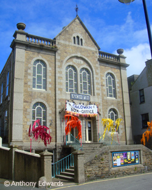

The Acorn Theatre, Penzance
- The Acorn Theatre (01736 363545)
Acorn Arts Centre,
Parade Street,
Penzance,
TR18 4BU
www.theacornpenzance.com
Find them on google maps
- See also - The Arts & Performance section
The Acorn Arts Centre is a small, independently run arts venue with charitable status, in the heart of Penzance, Cornwall.
In 1987 the trustees of Cornwall Theatre Company Ltd., a small scale touring theatre company, took over the assets and liabilities of the near defunct Penzance Arts Centre. Their aim was to increase and expand the audiences of the old arts centre by injecting a new enthusiasm for the arts into the community and widening the spectrum of arts provided.
In June 1996 the Acorn Arts Centre was awarded a significant grant from the National Lottery to undertake essential refurbishment of its premises and re-design the internal layout including improved access. Building works were completed in 1998 and the Acorn Arts Centre re-opened.
Being an intimate and friendly venue has meant that it has become highly regarded by visiting artists and audiences alike. By presenting the best of small scale arts and entertainment the Acorn Arts Centre is one of the longest running venues in Cornwall.
text © acornartscentre.co.uk